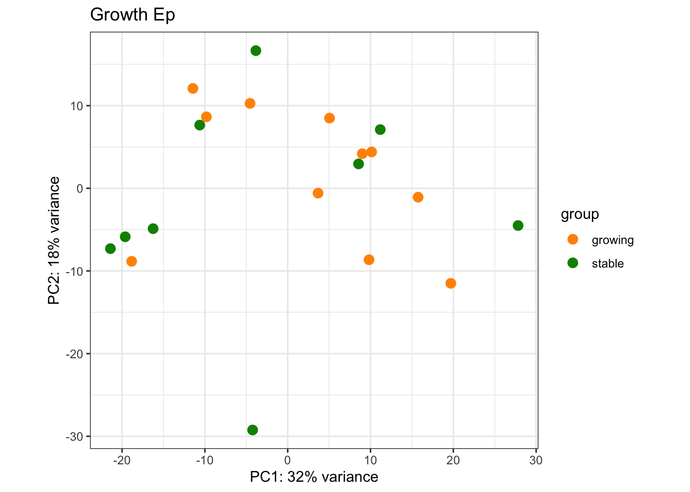

Chapter 6 RNA data: preliminary plots
Prior to doing any comparative analysis, we will look at the following plots to get an overview of the data.
6.1 PCA plots
We can check the new PCA plots, and overlay parameters of interest including treatment, growth, tumor size, CD8 fraction, spatial distribution.
vsd2 <- vst(dds)
vsd2$MHEpCAMcut=cut(infoTableFinal$MHEpCAM, c(-1, median(infoTableFinal$MHEpCAM, na.rm = T), 1.1), c("low", "high"))
vsd2$knnEpCAMcut=cut(infoTableFinal$knnEpCAM, c(-1, median(infoTableFinal$knnEpCAM, na.rm = T), 1E7), c("low", "high"))
vsd2$IFEpCAMcut=cut(infoTableFinal$IFEpCAM, c(-1, median(infoTableFinal$IFEpCAM, na.rm = T), 1.1), c("low", "high"))
vsd2$CD8FracCut=cut(infoTableFinal$CD8Frac, c(-1, median(infoTableFinal$CD8Frac, na.rm = T), 1.1), c("low", "high"))
plotPCA(vsd2, c("Treatment"))+ggtitle("Treatment")
vsdLimmaCor=(vsd2)
assay(vsdLimmaCor)=limma::removeBatchEffect(assay(vsdLimmaCor),vsdLimmaCor$Batch)In addition, we can look at the CD45 population and the distributions based on CD8 content and spatial infiltration
par(mfrow=c(2,2))
plotPCA(vsdLimmaCor[ , grep("CD45", colnames(vsdLimmaCor))], "CD8FracCut")+ggtitle("CD8 content")
plotPCA(vsdLimmaCor[ , grep("CD45", colnames(vsdLimmaCor))], "IFEpCAMcut")+ggtitle("CD8-EpCAM Infiltrating Fraction")plotPCA(vsdLimmaCor[ , grep("CD45", colnames(vsdLimmaCor))], "knnEpCAMcut")+ggtitle("CD8-EpCAM nearest neighbor distances")plotPCA(vsdLimmaCor[ , grep("CD45", colnames(vsdLimmaCor))], "MHEpCAMcut")+ggtitle("CD8-EpCAM MH index")
Note that the vsd values will need to be normalised by batch for visualisation.
6.2 Expression patterns by cell type
Below, we check whether the different fractions are expressing expected markers
The cell types are:
- Red: Cd45
- Epcam: green
- DN:blue
Xa=c(brewer.pal(3, "Reds"), brewer.pal(3, "Blues"), brewer.pal(3, "Greens"))
a2=plotPCA(vsd[, which(vsd$Cohort%in%"Progression")], c("Growth", "Fraction"))+scale_color_manual(values=Xa[c( 3,9, 6,1, 7, 4, 2,8, 5)])+theme_bw()
a2
Figure 6.1: Ext3d PCA plot
SaveOutput=a2$data
SaveOutput$sample=infoTableFinal$TumorIDnew[match(SaveOutput$name, rownames(infoTableFinal))]
write.csv(SaveOutput, file="nature-tables/Ext3d.csv")We can also visualise PCA plots specifically for CD45, DN or Ep samples
plotPCA(vsdLimmaCor[, which(vsdLimmaCor$Cohort%in%"Progression" & vsdLimmaCor$Fraction=="CD45")], c("Growth"))+scale_color_manual(values=c("orange", "#31A354"))+theme_bw()+ggtitle("CD45 frac by growth")
plotPCA(vsdLimmaCor[, which(vsdLimmaCor$Cohort%in%"Progression" & vsdLimmaCor$Fraction=="DN")], c("Growth"))+scale_color_manual(values=c("orange", "#31A354"))+theme_bw()+ggtitle("DN frac by growth")plotPCA(vsdLimmaCor[, which(vsdLimmaCor$Cohort%in%"Progression" & vsdLimmaCor$Fraction=="Ep")], c("Growth"))+scale_color_manual(values=c("orange", "#31A354"))+theme_bw()+ggtitle("Ep frac by growth")
Reference Genes:
- purple: immune
- blue: epithelial
- green: stroma
- orange: myoepithelial
- red: endothelial
Below, we see that the CD45 cells separate from the Ep/DN populations have high expression of immune related genes including CD3, CD4, IFNG.
However, the DN/Ep fractions are more intermixed. The DN fraction has expression of keratins, as well as fibroblast markers (Acta1), and myeoepithelial markers (Tp63)
## why doesnt this work???
Agenes=unlist(GeneListRat)
# Use the original desseq data,a nd then the limma data
x1=match(Agenes, rownames(assay(vsd)))
RatExpr2=assay(vsd)[na.omit(x1), which(vsd$Cohort=="Progression")]
RowSideCol=names(Agenes)[which(!is.na(x1))]
RowSideCol=substr(RowSideCol, 1, 3)
ColSideCol=sapply(strsplit(colnames(RatExpr2), "_"), function(x) x[length(x)])
colnames(RatExpr2)=paste(infoTableFinal$TumorIDnew[match(colnames(RatExpr2), rownames(infoTableFinal))],
infoTableFinal$Fraction[match(colnames(RatExpr2), rownames(infoTableFinal))])
#pdf("~/Desktop/FiguS3_celltype_markers_RNA.pdf", height = 10, width=14)
a1=heatmap.2(RatExpr2, col=RdBu[11:1], trace="none", RowSideColors = brewer.pal(6, "Set1")[factor(RowSideCol)], scale="row", ColSideColors =brewer.pal(3, "Set1")[factor(ColSideCol)] )Figure 6.2: Ext3e
We can also remove the CD45 fraction to see if there is a good separation between the CD45 and EPcam samples
a1=heatmap.2(RatExpr2[, -grep("CD45", colnames(RatExpr2))], col=RdBu[11:1], trace="none", RowSideColors = brewer.pal(6, "Set1")[factor(RowSideCol)], scale="row",
ColSideColors =brewer.pal(3, "Set1")[factor(ColSideCol[-grep("CD45", colnames(RatExpr2))])] )